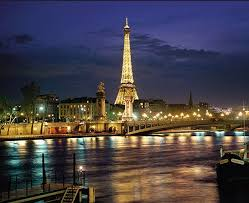

París, capital de Francia y conocida como la "Ciudad de la Luz", es un centro global de arte, moda, gastronomía y cultura situado a orillas del río Sena. Destaca por sus amplios bulevares, arquitectura del siglo XIX, y monumentos icónicos como la Torre Eiffel, Notre Dame y el Museo del Louvre.